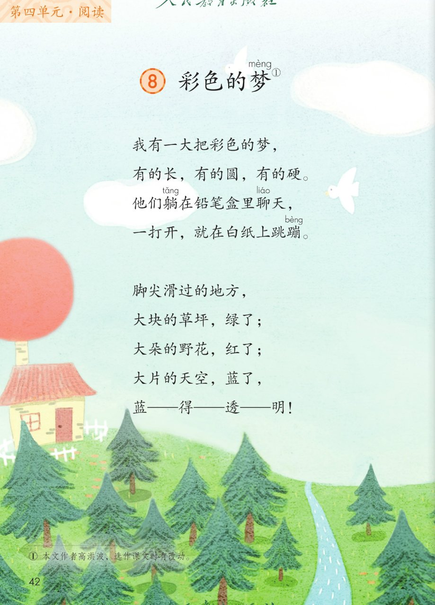
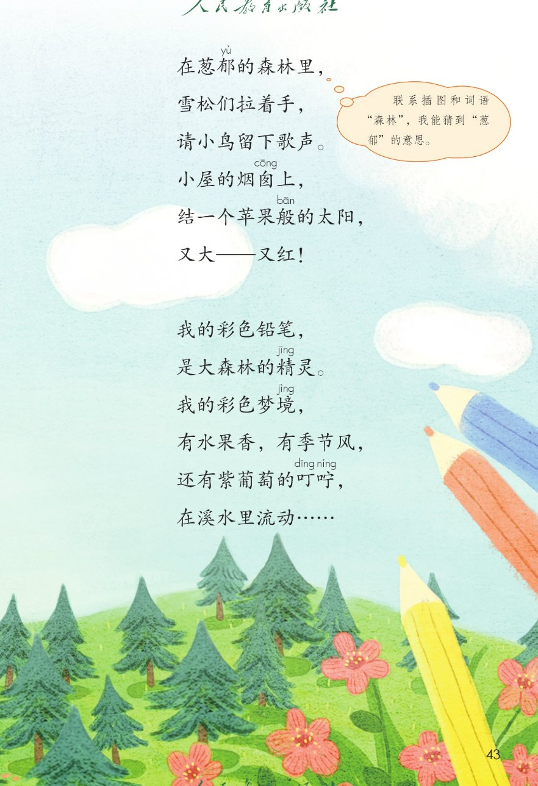
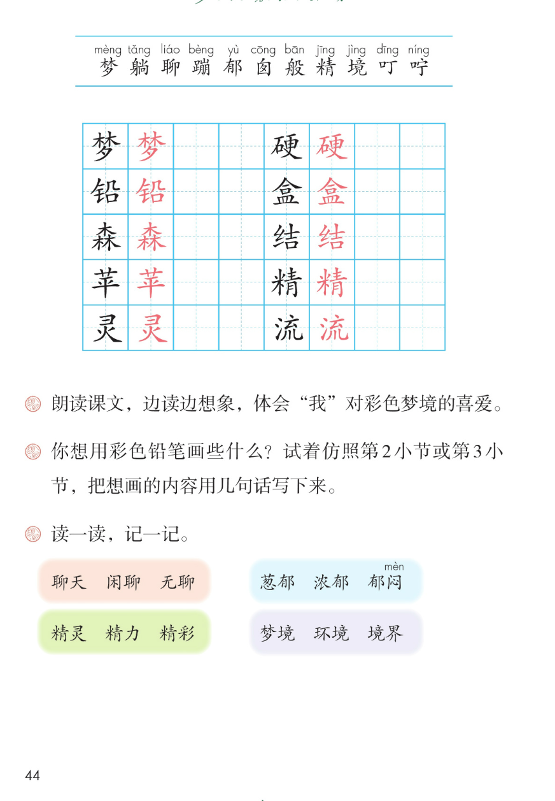

×
🔊 手机听不到声音怎么办？
① 先把手机
媒体音量调大 ，确认没开静音、没连蓝牙耳机；在微信里打开的，点右上角「⋯ → 用浏览器打开」。
② 还是没声音？到应用商店免费下载
Microsoft Edge 浏览器 （它自带朗读发声），用它打开本页面就能出声。
③ 换了 Edge 仍然没声音，说明这部手机的
硬件/系统不支持 网页朗读（多为老旧机型）；近几年买的新手机一般都能正常播放。
→ 打开声音自检
🌈 第 8 课《彩色的梦》· 有声图文带读
统编版语文 · 第四单元·阅读 · 课本 第 42~44 页 · 作者：高洪波
课文 4 节 · 共 21 句
会认字 11
会写字 10
听写词 10
近义词 4 组
深入理解 8 题
本课本领 朗读·想象·仿写
🎧 五步学（可随时点任意一句、一个字、一个词单独听）： ① 听读课文 ——四节儿童诗，一句一句读，读到哪一句哪一句发光；开「跟读」后读完一句留时间让你自己读。② 学字词 ——11 个会认字、10 个会写字（含书写提示），点一个读一个。③ 词语·听写·造句 ——先读课后「读一读，记一记」，再听写 10 个词（读两遍→你写→报答案→听示范句），最后听 4 组近义词辨析。④ 深入理解 ——8 道题（认知 / 理解 / 运用 / 拓展），开放题答案不唯一，先想后看。⑤ 分节朗读·想象画面 ——按五步想象彩色梦境的画面，再听四位朗读者分节读这首诗。
📚 本册第四单元·阅读（照课本目录）： 8 彩色的梦 → 9 枫树上的喜鹊 → 10 沙滩上的童话 → 11 我是一只小虫子 → 语文园地四
点节前的 ①②③④ 听整节
🔁 跟读模式：关
👁 隐藏注音（自测用）
注音只标本课要认、要写的字和课本明确标了音的字，读音来自课本第 44 页生字表
🎤 朗读要求（老师标准） 梦 读第四声，躺 读第三声，聊 读第二声，囱 读第一声；不添字、不漏字 ：逗号停得短，句号停得长，一句一句读清楚；读出儿童诗的轻快和喜欢 ：边读边想彩色的画面，草坪绿了、野花红了、天空蓝了；带破折号的句子读得又慢又亮 ：蓝得透明、又大又红，一字一顿，读出干净透亮；省略号轻轻散开 ：在溪水里流动后面，声音慢慢飘走，像梦散开。
①
我有一大把彩色的梦mèng ，
有的长，有的圆，有的硬yìng 。
他们躺tǎng 在铅笔盒hé 里聊liáo 天，
一打开，就在白纸上跳蹦bèng 。
②
脚尖滑过的地方，
大块的草坪，绿了；
大朵的野花，红了；
大片的天空，蓝了，
蓝——得——透——明！
③
在葱郁yù 的森sēn 林里，
雪松们拉着手，
请小鸟留下歌声。
小屋的烟囱cōng 上，
结结jié 一个苹píng 果般bān 的太阳，
又大——又红！
④
我的彩色铅qiān 笔，
是大森林的精jīng 灵líng 。
我的彩色梦境jìng ，
有水果香，有季节风，
还有紫葡萄的叮dīng 咛níng ，
在溪水里流liú 动dòng ……
🤔 想一想（点我可跳过）
点一张图，听读整页

第 42 页 · 课题与课文前两节

第 43 页 · 课文后两节

第 44 页 · 生字表与课后题
📖 人教版《语文》二年级下册 · 课本第 42~44 页 · 图片仅供个人学习，版权归人民教育出版社所有
点一个字，听读音、词语和课文里的句子
结构、部首、笔画与书写提示为通用规范，供参考，以教材和老师的指导为准
梦
mèng
彩色的梦 · 梦境
11 画 · 上下（夕）
上林下夕，上下都要写扁、写紧凑
铅
qiān
彩色铅笔 · 铅
10 画 · 左右（钅）
左窄右宽，右边几字写稳
森
sēn
森林 · 森
12 画 · 品字结构（木）
三个木叠起来，下面两个木要写扁
苹
píng
苹果 · 苹果般
8 画 · 上下（艹）
草字头要写扁，下面平字写稳
灵
líng
精灵 · 灵敏
7 画 · 上下（彐）
上雨字头略扁，下火字要写稳
硬
yìng
坚硬 · 硬
12 画 · 左右（石）
左窄右宽，右边的更字写正
盒
hé
铅笔盒 · 盒子
11 画 · 上下（皿）
上合下皿，皿字底写宽托住
结
jié
结出 · 结果
9 画 · 左右（纟）
左窄右宽，右边吉字写稳
精
jīng
精灵 · 精力
14 画 · 左右（米）
左窄右宽，右边青字写正
流
liú
流动 · 河流
10 画 · 左右（氵）
左窄右宽，右边㐬字写稳
点一行，听词语和课后题的答案
📖 课后题（课本第 44 页照录） ：① 朗读课文，边读边想象，体会我对彩色梦境的喜爱。 ② 你想用彩色铅笔画些什么？试着仿照第二小节或第三小节，把想画的内容用几句话写下来。 ③ 读一读，记一记。
聊天 聊天 闲聊 无聊
葱郁 葱郁 浓郁 郁闷（闷 mèn）
精灵 精灵 精力 精彩
梦境 梦境 环境 境界
读两遍 → 你在纸上写 → 报答案 → 听示范句
准备听写 · 共 10 个词
○ ○ ○
点下面的「开始听写」，听到一个词就写一个词。
▶ 开始听写
🔁 再读一遍
👁 看答案
点词听读，点句子听示范句，再自己说一句
1 梦境 会写字 · 梦
示范句：我做了一个彩色的梦境。
✏️ 我也能说：谁 + 做了什么梦
2 铅笔 会写字 · 铅
示范句：我的彩色铅笔画出了一片森林。
✏️ 我也能说：彩色铅笔 + 画出了什么
3 森林 会写字 · 森
示范句：葱郁的森林里，雪松们拉着手。
✏️ 我也能说：什么样的森林 + 有什么
4 苹果 会写字 · 苹
示范句：小屋的烟囱上，结了一个苹果般的太阳。
✏️ 我也能说：什么 + 像苹果般
5 精灵 会写字 · 灵
示范句：彩色铅笔，是大森林的精灵。
✏️ 我也能说：什么 + 是…的精灵
6 坚硬 会写字 · 硬
示范句：彩色铅笔有的长，有的圆，有的硬。
✏️ 我也能说：什么 + 是硬的
7 铅笔盒 会写字 · 盒
示范句：彩色铅笔躺在铅笔盒里聊天。
✏️ 我也能说：什么 + 在铅笔盒里
8 结果 会写字 · 结
示范句：小屋的烟囱上，结一个苹果般的太阳。
✏️ 我也能说：哪里 + 结出什么
9 精力 会写字 · 精
示范句：小动物们玩了一天，还有精力唱歌。
✏️ 我也能说：谁 + 还有精力做什么
10 流动 会写字 · 流
示范句：紫葡萄的叮咛，在溪水里流动。
✏️ 我也能说：什么 + 在…里流动
相同点 / 不一样在哪 / 各造一句
聊天 — 闲聊
相同：都表示两人或几人随意说话 。
不一样：聊天 最常用，平时说话都叫聊天；闲聊 偏没事时随便聊聊。课文里说：他们躺在铅笔盒里聊天。
聊天：我们下课一起聊天。
葱郁 — 茂盛
相同：都写植物长得很密很绿 。
不一样：葱郁 带颜色感，课文写葱郁的森林；茂盛 只说长得旺，不强调绿。
葱郁：葱郁的森林真好看。
梦境 — 梦乡
相同：都指睡着后脑子里的画面 。
不一样：梦境 偏奇幻、多彩，课文说彩色梦境；梦乡 偏安睡，常说进入梦乡。
梦境：我做了一个彩色的梦境。
透明 — 透亮
相同：都表示清亮、能看穿 。
不一样：透明 是课文词，蓝得透明；透亮 更口语，说玻璃透亮。
透明：溪水清得透明。
又…又… 又大又红 又大又圆
…般的（像什么） 苹果般的太阳 石头般的小桥
数量词 + 事物 大块的草坪 大朵的野花 大片的天空
表示颜色的词 绿了 红了 蓝了
标「答案不唯一」的题，说得有道理都对
认知 课文里的「彩色的梦」其实是什么？第一节说彩色铅笔躺在铅笔盒里，那它画了哪些事物？看解析
🤔 想一想
解析：
彩色梦就是彩色铅笔，躺在铅笔盒里
草坪、野花、天空、森林、雪松、小鸟
梦是铅笔，也是铅笔画出的画
认知 这首诗一共有几个小节？每一小节大概写了什么？看解析
🤔 想一想
解析：
四个小节，标着 ①②③④
一节写笔，二节写画，三节写森林，四节写梦
从笔到画，从画到梦，四节连成一串
理解 第二节「大块的草坪，绿了；大朵的野花，红了；大片的天空，蓝了」用了什么写法？这样写好在哪里？看解析
🤔 想一想
解析：
三个大…的…，都一样
草坪到野花到天空，从低到高
读着有节奏，画面越来越丰富
理解 「蓝——得——透——明！」里的破折号表示什么？诗人为什么这样写？看解析
🤔 想一想
解析：
蓝和透之间有三个破折号
拉长了，慢慢读
写出蓝得非常干净透亮
理解 第三节把雪松、小鸟、太阳当成人来写（雪松拉手、请小鸟唱歌、苹果般的太阳），这样写有什么好处？看解析
🤔 想一想
解析：
拉手、留下歌声、苹果般的
把物当成人，拟人
森林热闹可爱，像动画片
运用 课后题：你想用彩色铅笔画些什么？试着仿照第二节或第三节，写几句话。看解析
🤔 想一想
解析：
第二节用大块的…绿了
草地、桃花、小河都可以
说清变成什么颜色
🌈 答案不唯一，说得有道理都对
运用 用「大块的…绿了；大朵的…红了」这样的句式，说说你心中的画。看解析
🤔 想一想
解析：
数量词加事物加颜色
荷叶荷花湖水都行
🌈 答案不唯一，说得有道理都对
拓展 你最喜欢诗里哪一处想象？为什么？看解析
🤔 想一想
解析：
天空干净透亮
又圆又红可爱
葡萄像在说话
🌈 答案不唯一，说得有道理都对
点一步，听这一步
3
第三节
4
第四节
💬 想象支架：先 想彩色铅笔在盒里 → 再 想脚尖画出颜色 → 接着 想森林里雪松小鸟 → 最后 想梦境里的香味和声音。
点一张卡，听这一节的句子
🌈 第1节·朗读者
第1节：我有一大把彩色的梦，
💬 读得轻快，像打开一盒宝贝蜡笔，心里高兴
🌈 第2节·朗读者
第2节：脚尖滑过的地方，
💬 三个颜色一句比一句亮，蓝得透明读得又慢又亮
🌈 第3节·朗读者
第3节：在葱郁的森林里，
💬 森林像朋友，雪松拉手、小鸟唱歌，读得热闹可爱
🌈 第4节·朗读者
第4节：我的彩色铅笔，
💬 梦境轻轻散开，叮咛读得温柔，省略号拖一点